Welcome to my E-Portfolio! Here you can explore my personal projects, ICT/TLE works, and AP activities.
Feel free to navigate through the menu (◍•ᴗ•◍). This is also the ICT/TLE Area but with a collection of all the school events this quarter :3!
Credits to Bela Paguigan, 9-Faith(AP Month); Jade Imperial, 9-Family(Intramurals Pictures); Juan Amelia Dandan 9-Family(Cluster Meet Video)
Buwan ng Wika
During our Buwan ng Wika celebration, I gained a deeper appreciation for our language and culture. Watching the performances and activities, and wearing the outfit reminded me how diverse Filipinos can be. This encouraged me to use our own language more proudly in everyday life. Even though I only watched, I actively participated by showing support and cheering for the performers. I can share what I learned by reminding others to value and preserve our heritage. Events like this are important because they strengthen our love for the nation and unity. They help people understand and celebrate what makes being Filipino special.
Intramurals
Intramurals taught me that teamwork, discipline, and respect are just as important as winning. Observing the different teams made me realize how much effort and dedication goes into every game. I can apply these lessons by cooperating with others in group projects and by keeping a positive attitude even when things don’t go my way. I loved watching and cheering for my team and classmates after class. I want to inspire others by promoting sportsmanship and encouraging people to stay positive. Holding sports events like this helps build camaraderie and school pride among students. It also provides a healthy break from academics and teaches values that go beyond the classroom.
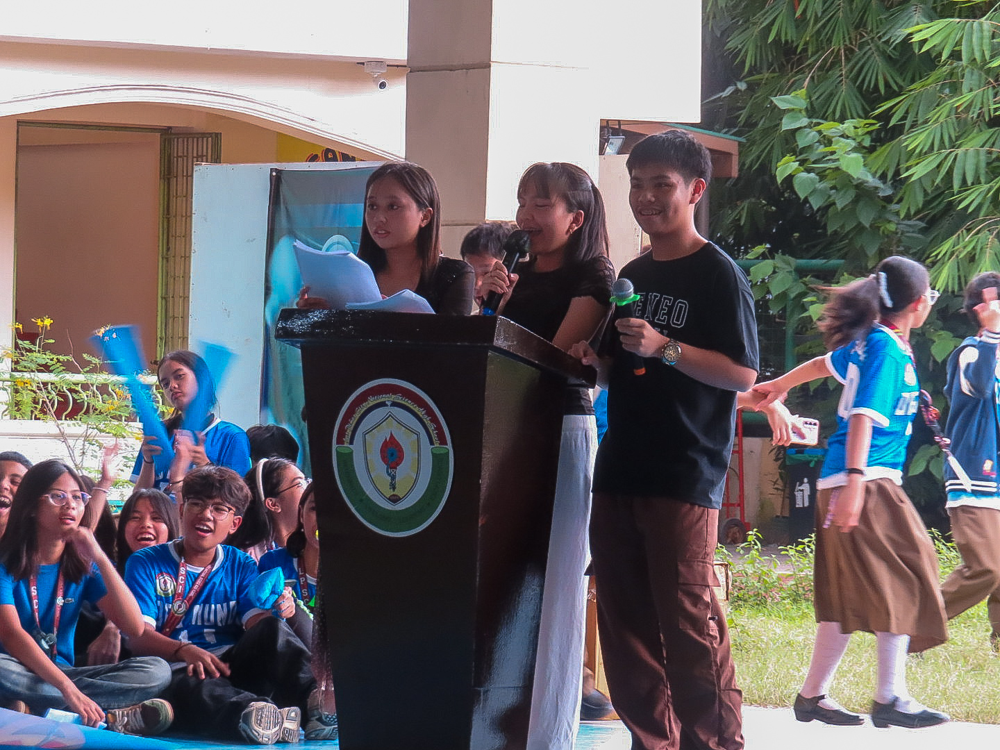
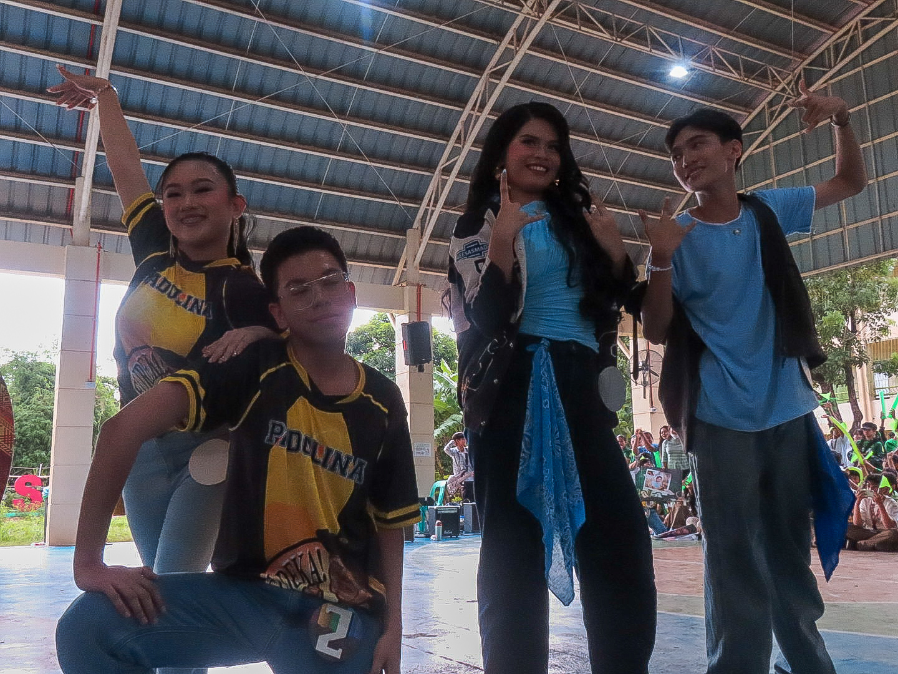
Science Month
Science Month helped me realize how important hygiene, cleanliness, and awareness is in maintaining good health and hygiene. Creating our WINS corner and posters made me see how health applies to everyday life. I can use what I learned by practicing proper hygiene and encouraging others to do the same. I participated by helping decorate our WINS corner that promotes health and cleanliness. Teaching others about hygiene can be done through small reminders and by setting a good example. Celebrations like this encourage us to be creative and to be mindful. This also promotes responsibility for our environment and overall well-being.
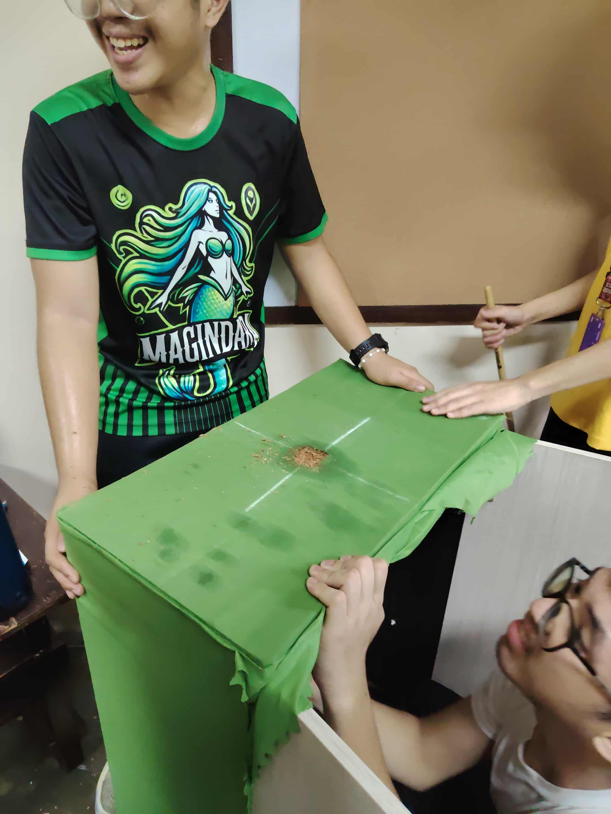
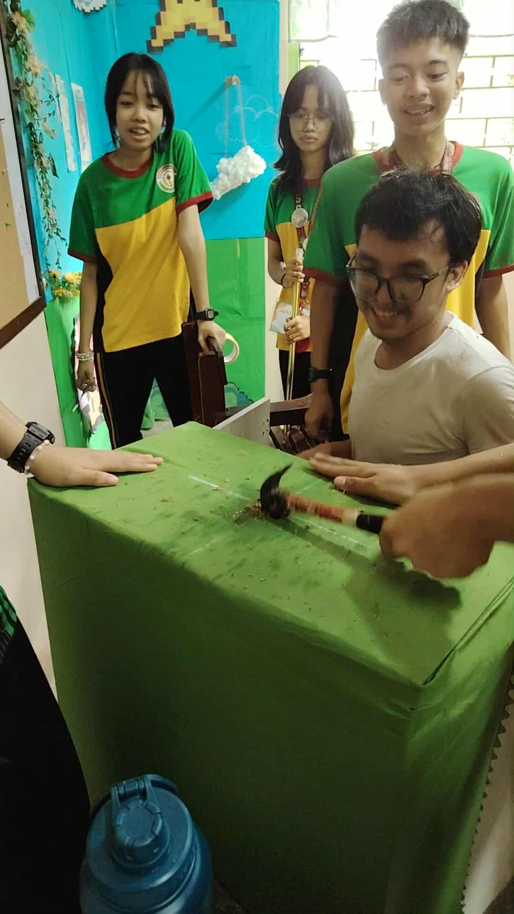
AP Month
AP Month was both educational and inspiring, especially with our seminar about the West Philippine Sea. Creating my editorial cartoon helped me express my opinions creatively and understand world issues more deeply. I learned about how important it is to be aware of national and social issues that affect our country. I can apply this by being informed and responsible citizen. I participated by attending the seminar and sharing my ideas through my cartoon. I can teach others by discussing what I learned and encouraging them to care about current events. Events like AP Month help build national unity among students.
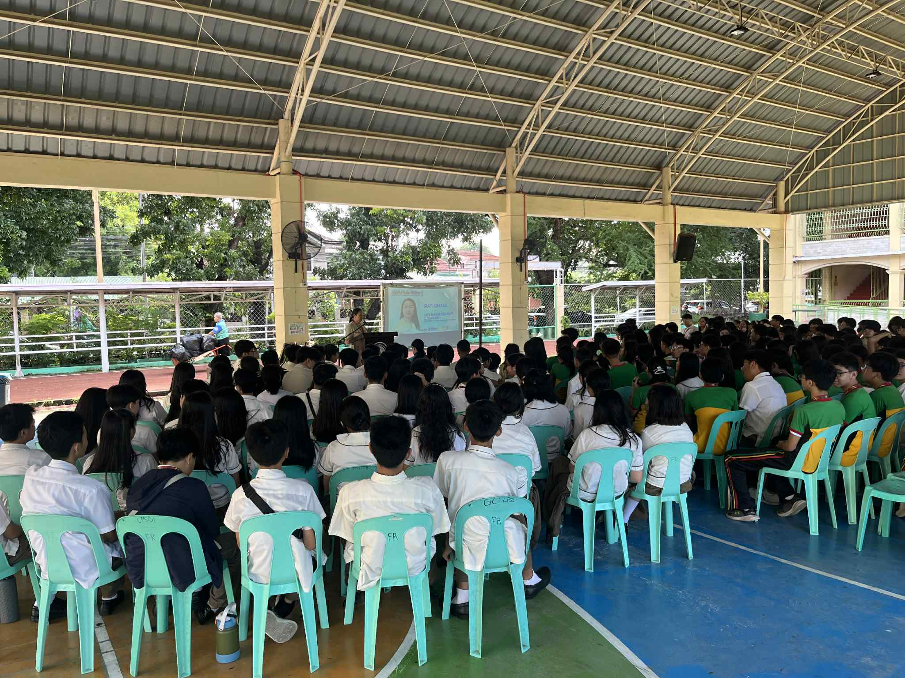
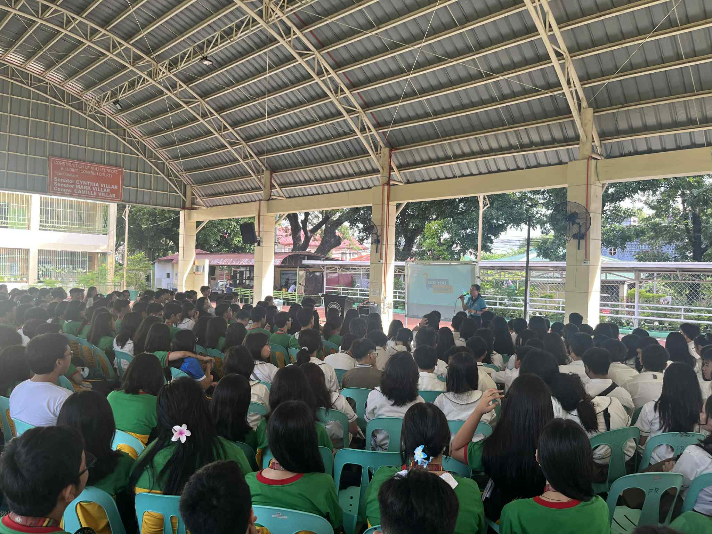
Teacher's Day
Our class celebration for Teachers’ Day reminded me how much teachers do to teach and support us every day. Seeing their smiles during the event made me realize the importance of showing gratitude for all the work our teachers do. I can apply this by respecting my teachers and giving my best effort in their classes. I participated by joining in the preparations and helping make the celebration meaningful. I can teach others to value teachers by encouraging them to express their thanks in simple, heartfelt ways, like bowing whenever seeing them. Holding events like this strengthens the bond between students and teachers and highlights the vital role of teachers in shaping our future.
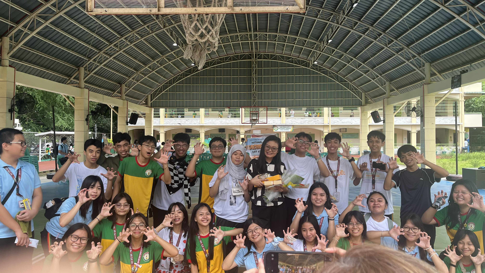
Cluster Meet
Watching the Cluster Meet showed me how dedication and practice can lead to excellence. Seeing students from different schools compete motivated me to aim higher and to develop and learn brand new skills. I can do this by putting in more effort in my studies and extracurricular activities in school. Although I didn’t compete, I supported my school and learned from their performances. I can share these insights by motivating my classmates to join future contests and to do their best. Events like this build confidence and showcase the talents of our students to different schools.

 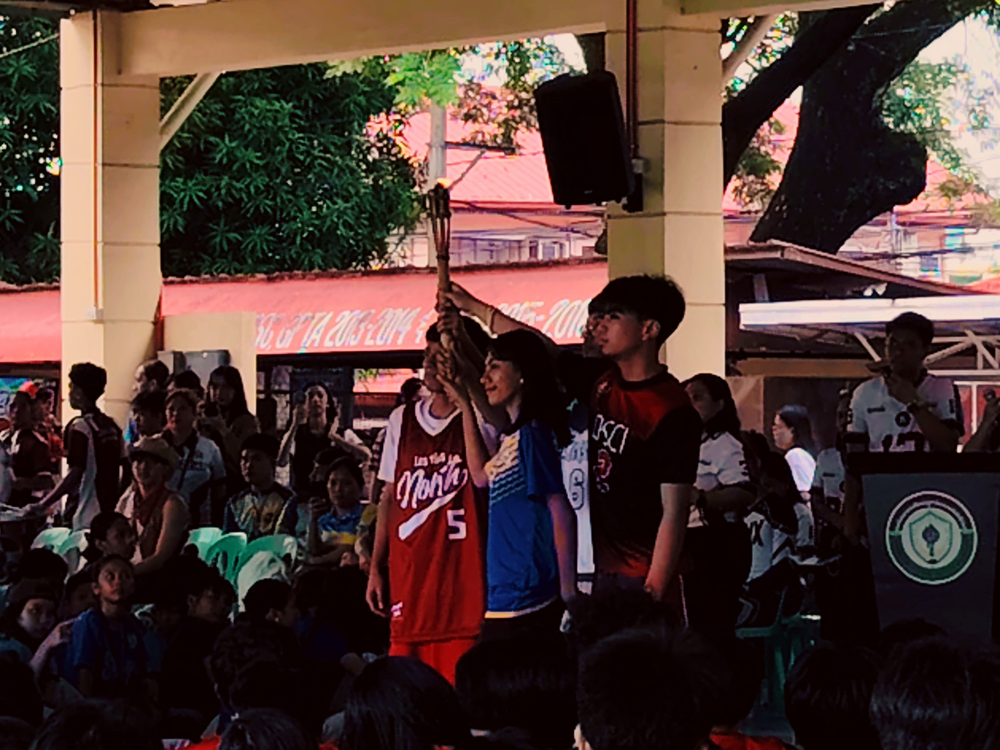
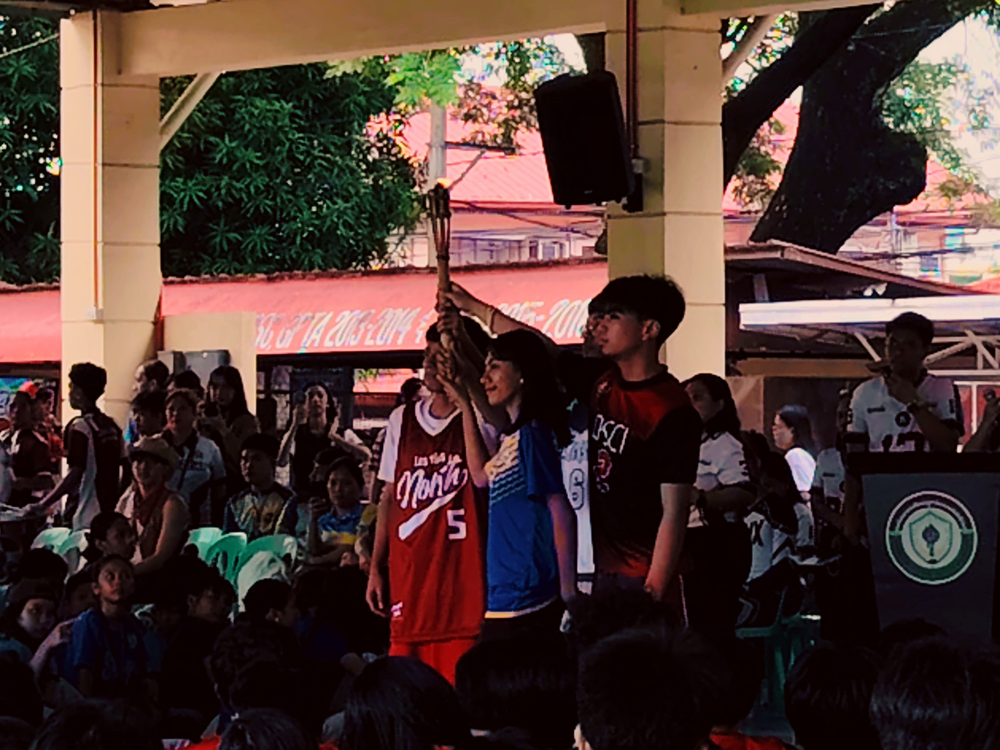


 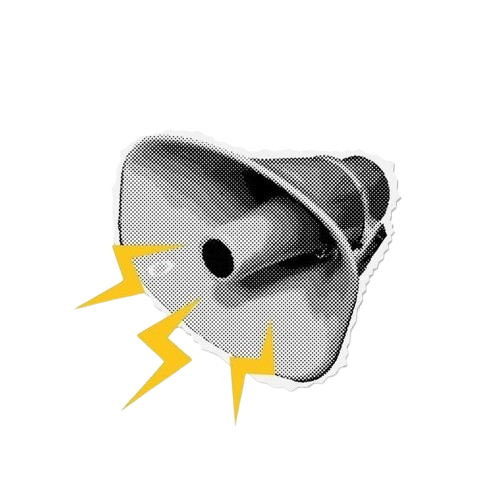
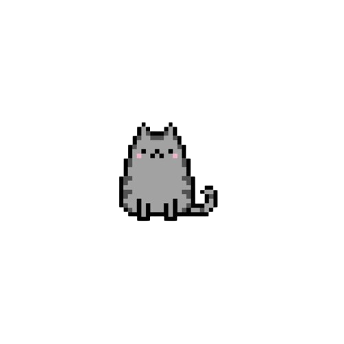
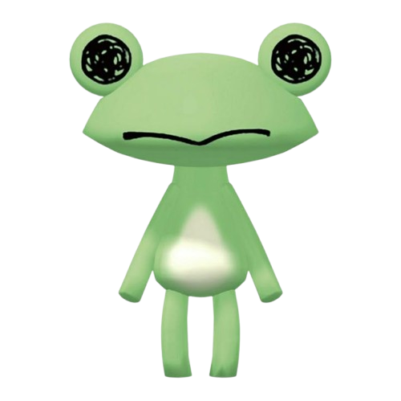
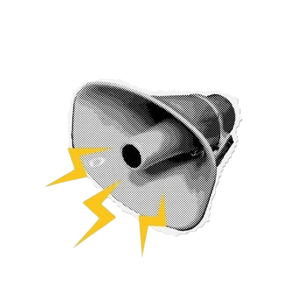
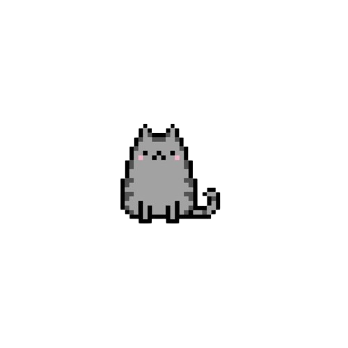
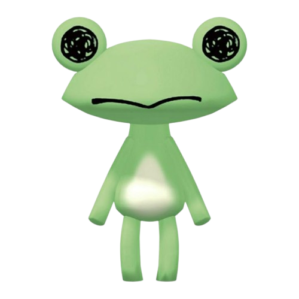